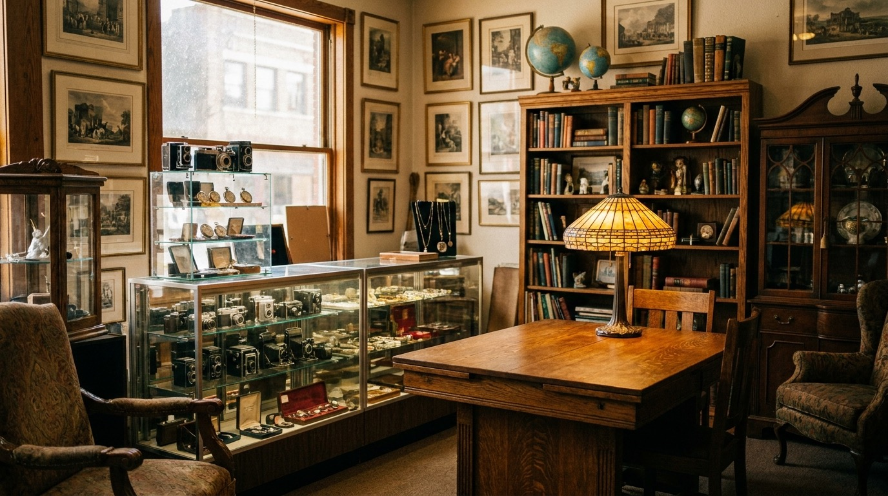
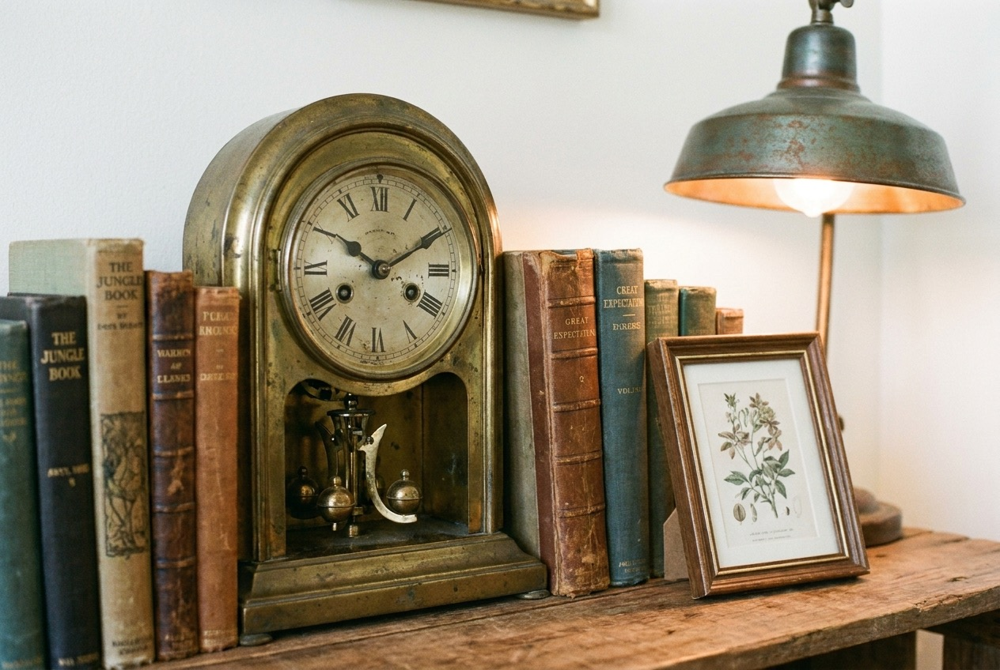

Antiques
Older pieces with some history to them. Furniture, hardware, and the odd thing you didn't know you were looking for.

Downtown Franklin, Tennessee
Antiques, vintage finds, and collectibles on South Margin Street. It's the kind of place you walk into for a minute and look up an hour later.
104 S Margin St · Franklin, TN 37064
What you'll find inside
Stock changes all the time, so no two visits look the same. Here's the kind of thing that tends to turn up on the shelves and floors.
Older pieces with some history to them. Furniture, hardware, and the odd thing you didn't know you were looking for.
Decades-old finds that still have plenty of life. Worth a slow look, since the good stuff hides in the back.
Small things people hunt for. If you collect, you already know the feeling of spotting one across the room.
Pieces with character for a room that needs one. Not the same set everyone else has.
The shop
Franklin's downtown is made for walking, and this is one of the doors worth opening while you're out. The Antique Store & More sits at 104 S Margin St, a short stroll off the main square.
Right now the easiest way to find the shop is through Facebook and Instagram, so a lot of people wandering downtown walk right past without knowing what's inside. That's what this page is here to fix. Come see the antiques, the vintage finds, and the collectibles in person.
Map it on South Margin StreetA look inside

Good to know
104 S Margin St, Franklin, TN 37064. We're in walkable downtown Franklin, just off the square. Use the directions button and it'll take you straight there.
Antiques, vintage items, collectibles, and home decor. The inventory turns over, so it's always worth a fresh look.
Downtown Franklin has street parking and public lots nearby. Give us a call at (615) 905-8722 and we're happy to point you to the closest spot the day you're coming.
Hours can shift, so the safest move is a quick call before you head over. We've listed a sample schedule below that we'll confirm with the owner and update here.
Come by
Sample hours, please confirm
These are a placeholder. We'll update them with your real hours before launch.
| Mon – Thu | 10:00 AM – 5:00 PM |
|---|---|
| Fri – Sat | 10:00 AM – 6:00 PM |
| Sunday | 12:00 PM – 5:00 PM |